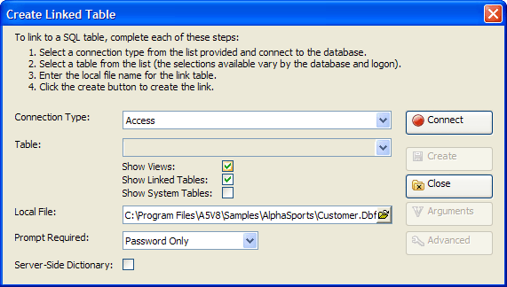

Create Linked Table Dialog
The Create Linked Table dialog helps you create a linked table.

Procedure
Select a type of back-end database from the Connection Type list.
Click Connect to display the Connect to Database dialog.
Navigate to and select a database in the File Name control.
Enter the other values required to access the database.
Click Test Connection.
Click OK if the connection succeeded.
The default list of data sources shows only tables. Optionally, check Show Views, Show Linked Tables, and Show System Tables.
Select the remote back-end table or view that you wish to be the data source in the Table list.
Optionally, click Arguments to display the
Optionally, click Advanced to display the Create Linked Table - Advanced Settings dialog.
Enter the path and name of the local Alpha Five table in the Local File control. You may also click
 to navigate to, name, or
select an existing table.
to navigate to, name, or
select an existing table.Optionally, make a selection from the Prompt Required list. The options are:
"None"
"Password only"
"User Name and Password"
Optionally, check Server-Side Dictionary.
Click Create.
Click Close to exit.
Supported By
Alpha Five Version 9 Enterprise Edition
Limitations
Desktop applications only.
See Also
Working with Passive Linked Tables